三周年？没听说过啊？没事，且听小编慢慢道来~~~
三周年？没听说过啊？没事，且听小编慢慢道来~~~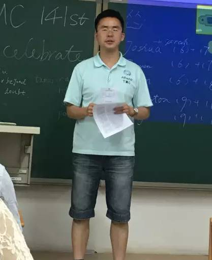
 ，在一次偶然的参加其他头马俱乐部会议后对一位女孩一见钟情
，在一次偶然的参加其他头马俱乐部会议后对一位女孩一见钟情 ，由于两人并不熟悉，只知道她经常参加该俱乐部的活动，为了和她产生更多的交集，学长说不如在我们北航也创办一个头马俱乐部吧，并希望藉此能经常邀请她能够来北航头马做客。学长不愧为我北航的莘莘学子中的杰出典范，知行合一的校训从未忘记，创建俱乐部说干就干，而后，就有了上周五我们的三周年趴~~
，由于两人并不熟悉，只知道她经常参加该俱乐部的活动，为了和她产生更多的交集，学长说不如在我们北航也创办一个头马俱乐部吧，并希望藉此能经常邀请她能够来北航头马做客。学长不愧为我北航的莘莘学子中的杰出典范，知行合一的校训从未忘记，创建俱乐部说干就干，而后，就有了上周五我们的三周年趴~~ 哈哈~~~一般人我不告诉TA哦~，
哈哈~~~一般人我不告诉TA哦~， 来meeting吧，来就告诉你哦~
来meeting吧，来就告诉你哦~ ，就让小编带大家回顾下吧~
，就让小编带大家回顾下吧~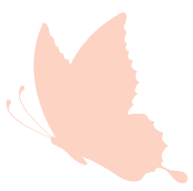
 。（一本正经的胡说八道），并对kiki表示感激！祝愿头马在新的一年里更加辉煌，也祝Kiki卸任后能在今后的人生中遇见更美好的自己~
。（一本正经的胡说八道），并对kiki表示感激！祝愿头马在新的一年里更加辉煌，也祝Kiki卸任后能在今后的人生中遇见更美好的自己~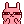
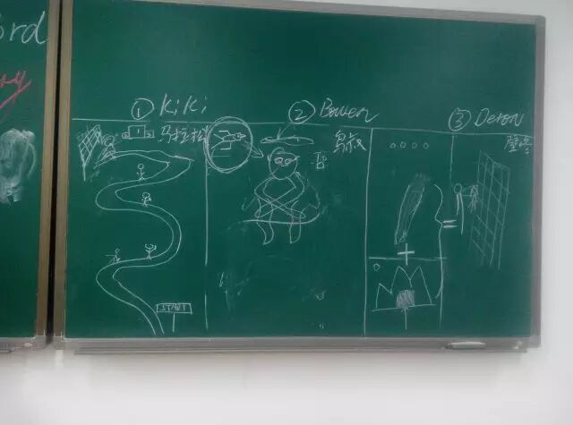
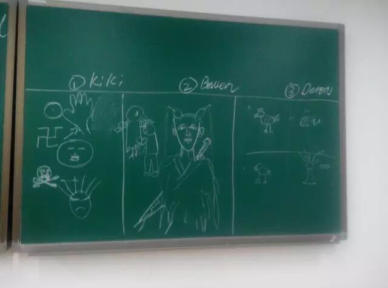
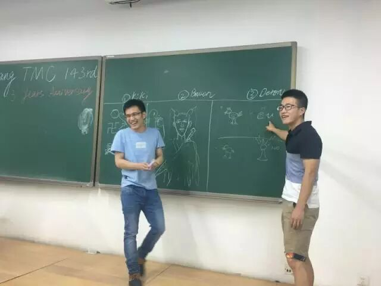
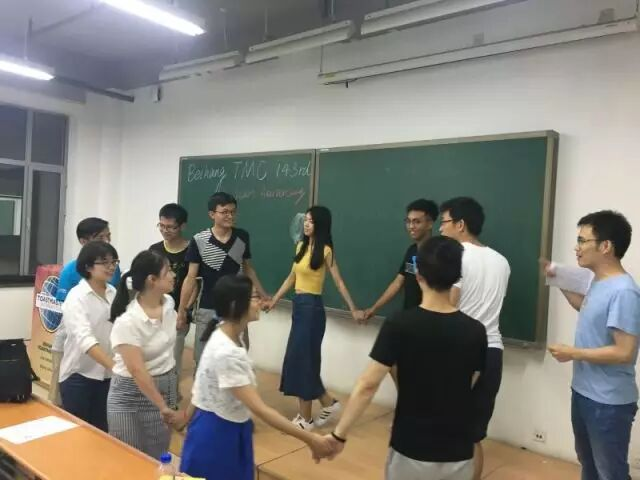
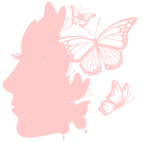
~哈哈，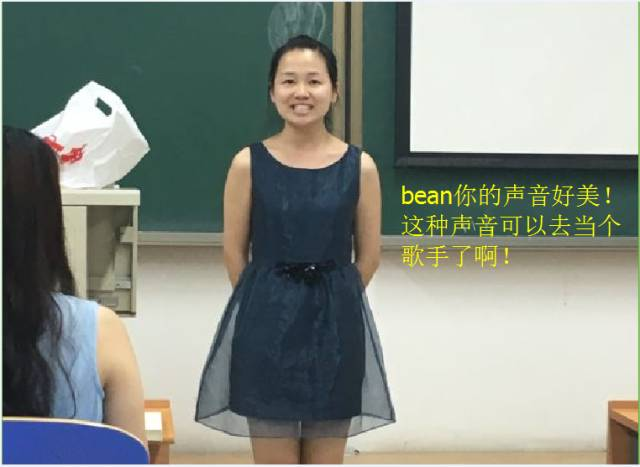
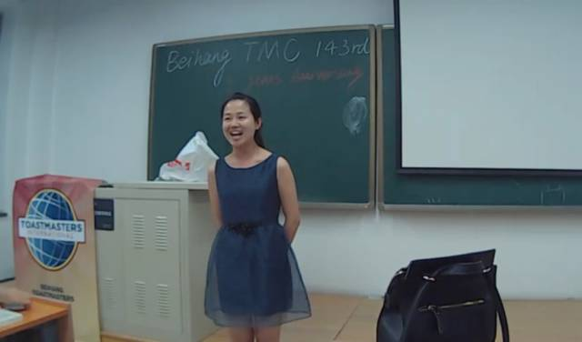
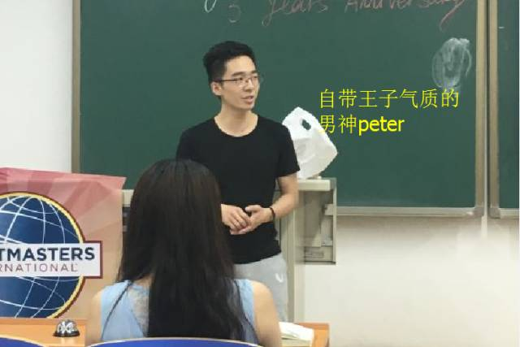
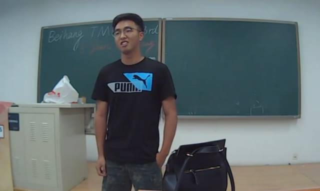
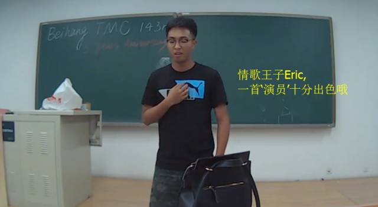
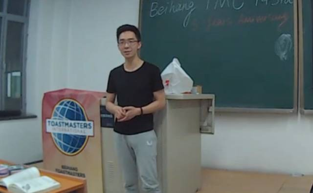
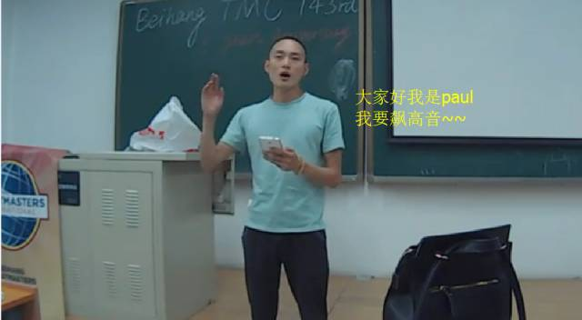
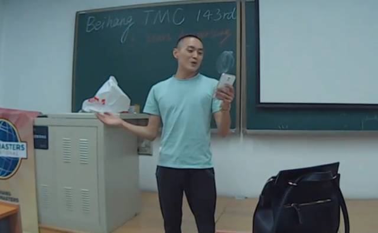

Eric的抛砖引玉，其实一点都不砖啊！好喜欢这首歌，很多转折的地方真的很难唱但你却展现的很棒！真的是个好“演员”！
男神Peter，用一首深情，动人的英文歌曲撩动大家的芳心，虽然我没听过，但在场的女性观众都快hold不住了，而且声音那么有磁性，唱的还辣么好，我只能说猴赛雷啊！
不过敢上台表演的米那桑肯定都是勇敢而又自信的，这就足够了，Have fun together~
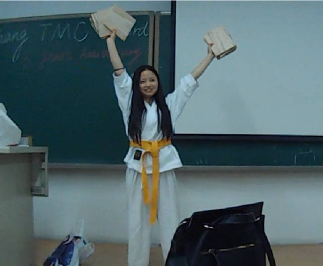
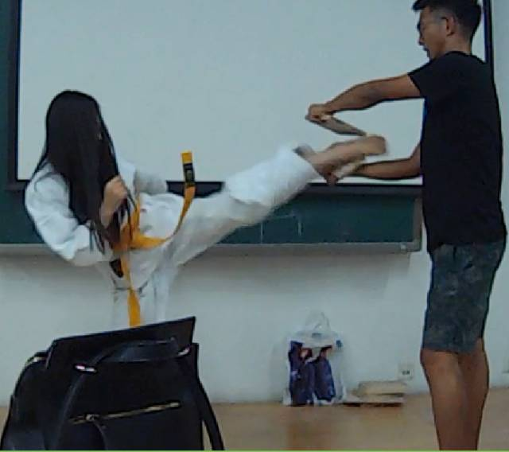
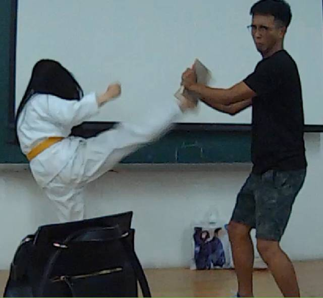
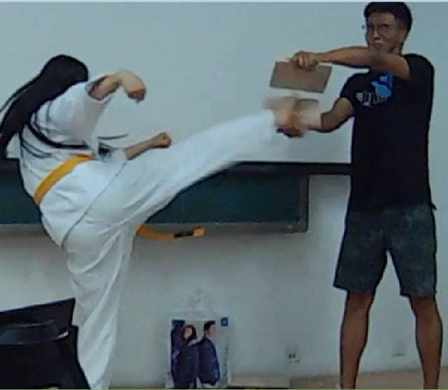
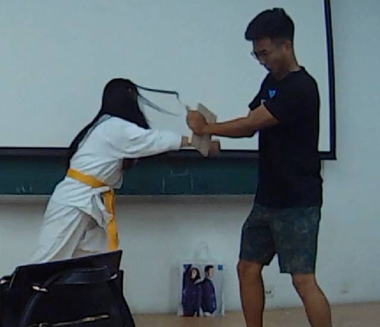
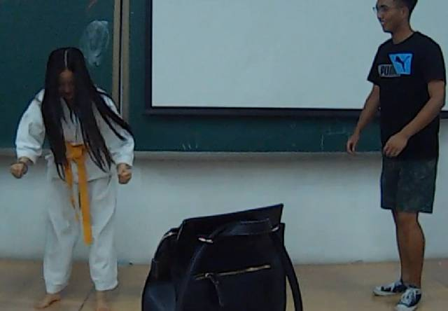
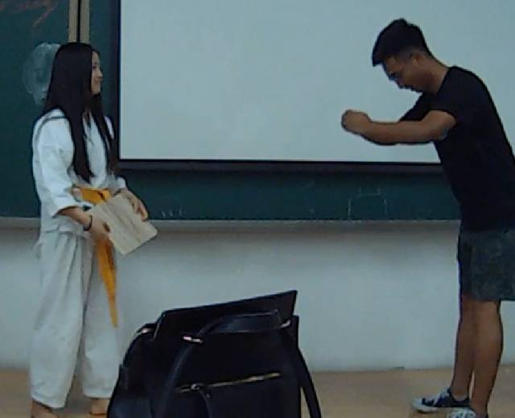
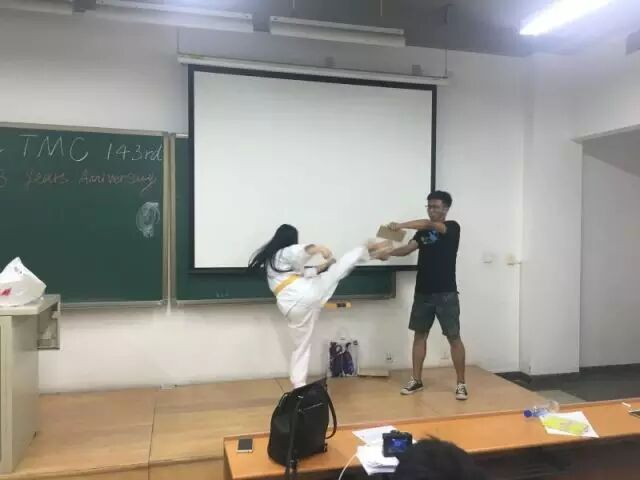
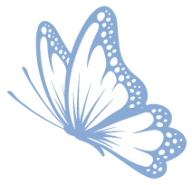
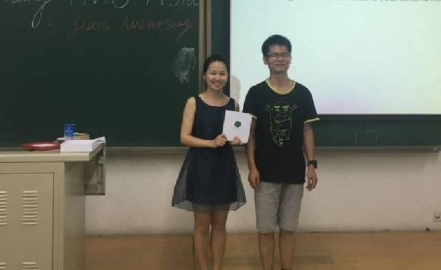
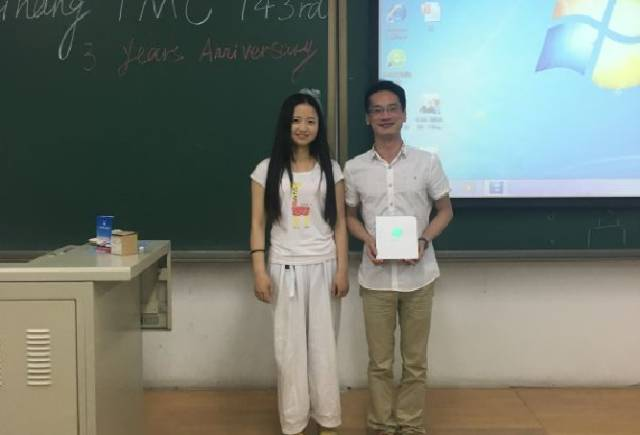
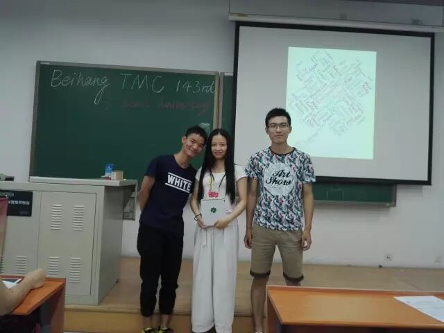
且将新火试新茶.
诗酒趁年华
原文链接（公众号关闭后可能失效）：
https://mp.weixin.qq.com/s/D7PJrWEFm6Etly14L86nxA
https://mp.weixin.qq.com/s/D7PJrWEFm6Etly14L86nxA
第 306/539 篇 · 北航Toastmasters英文演讲俱乐部公众号存档
本页为抢救式本地归档，图文已永久保存。
本页为抢救式本地归档，图文已永久保存。